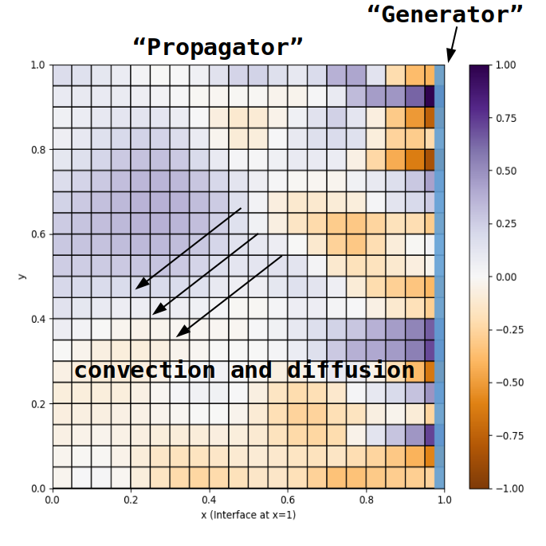
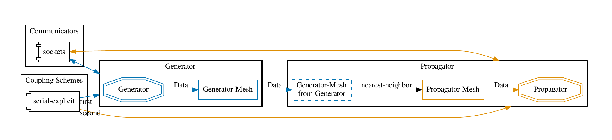
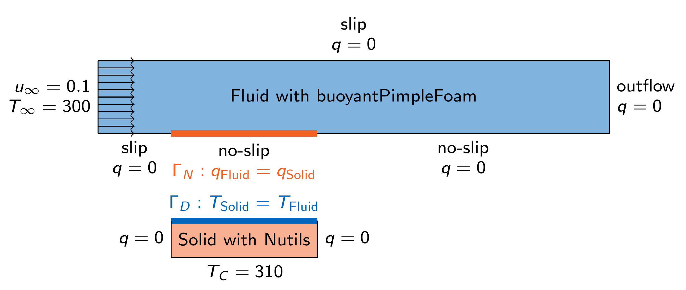
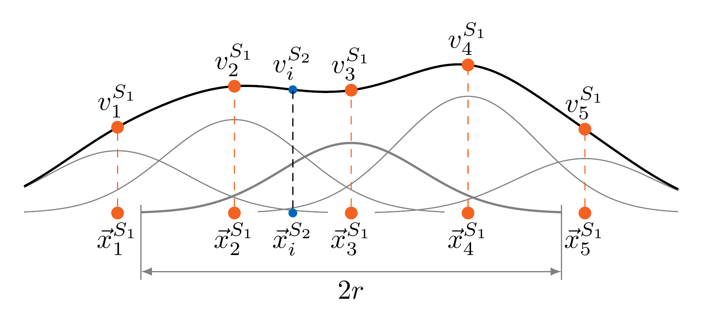
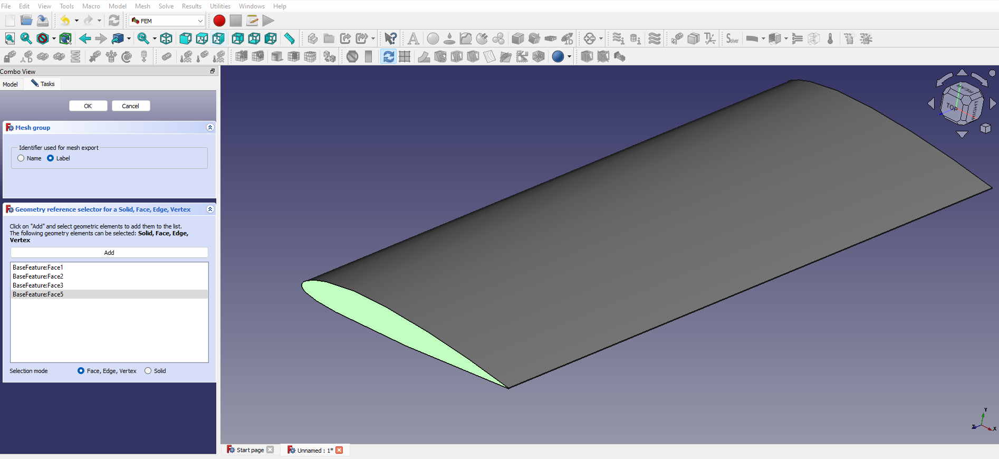
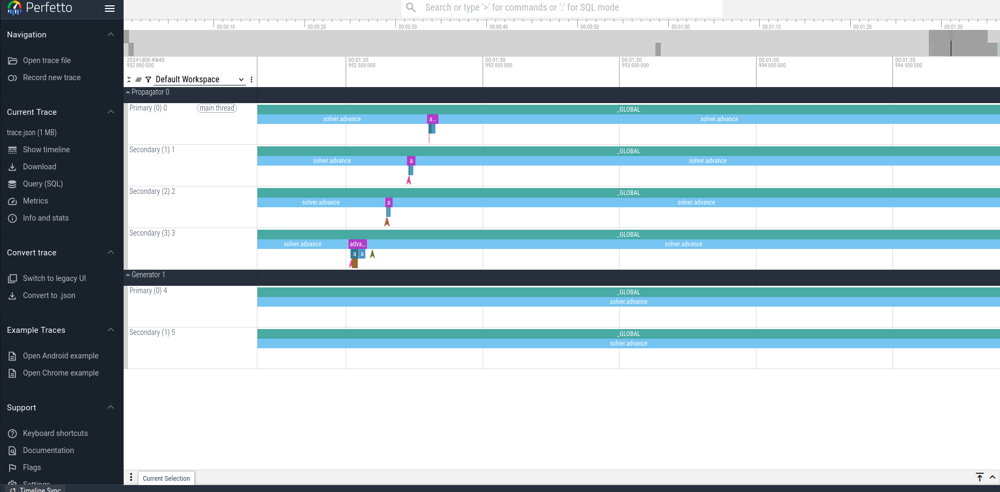
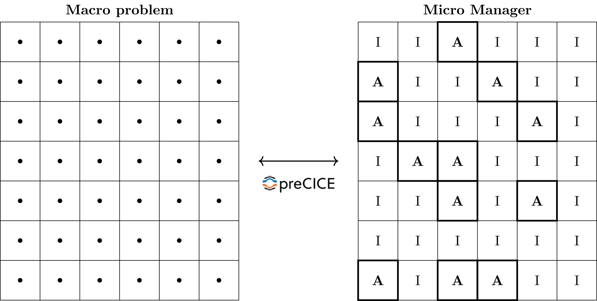

preCICE training
About the course
Since 2020, we have been developing a dedicated training course on preCICE. Originally conceptualized for beginners, more and more content for advanced users has been added. We regularly give the complete course at the preCICE workshops and parts of it at various different occasions (for example as a minitutorial at SIAM CSE 2023. We also offer to give private and bespoke versions of the course through the preCICE support program. Please note that the material of the course (besides community-contributed modules) is not distributed with a FOSS license, in contrast to almost everything else we do.
Teaching concept
The course is organized in separate modules, which can be combined in various different ways. Each module typically takes 120 to 150 minutes to complete. We start each module with a short presentation explaining some background and giving an overview of the tasks. Then, students work on the tasks in a hands-on fashion, individually or in groups. Questions are answered individually by typically several instructors. We close each module by discussing solution approaches and open problems all together. We recommend using the preCICE Demo Virtual Machine to follow the tasks. The actual course material is tailored to the needs of each event and distributed via download links.
Content
The course currently consists of four modules. Several more will follow.
Basics
We couple two simple Python codes, discussing the basic methods of the preCICE API.

Tools
We take a tour over available tools to configure, understand, and post-process preCICE simulations. More specifically, we have a look at the preCICE logger, config visualizer, mesh exports, and watchpoints of preCICE. We also discuss common tips for visualizing partitioned simulations in ParaView.

Implicit coupling
We use a conjugate heat transfer scenario coupling OpenFOAM with Nutils to study implicit coupling, including acceleration methods.

Data mapping
We explore aspects of accuracy and efficiency in data mapping, using ASTE.

Workflow for FSI simulations
In this community-contributed part of the course, we are going step by step through the process of creating a fluid-structure interaction simulation coupling CalculiX and OpenFOAM. We start by creating the meshes for both solvers, using FreeCAD and snappyHexMesh. We then setup and run single-physics simulations, before we couple them.

Parallelization and HPC workflows
We parallelize the same Python codes used in the Basics module, we analyze the performance-related events, run partitioned simulations in parallel on SLURM-enabled systems, and look deeper into common performance-related pitfalls.

Macro-micro coupling
We couple many micro simulations to a macro simulation: We use the Micro Manager to set up Python and C++ micro simulations, learn how manage runtime using adaptivity, implement model adaptivity, and run the micro simulations in parallel with adaptivity and load balancing.

How to prepare?
On the technical side, the training course involves multiple components of the preCICE ecosystem, as well as third-party solvers and pre- and post-processing tools. Most of these tools work best (or only) on a Linux system. You can either (a) use a prepared system image that we provide (e.g., in a virtual machine), or (b) install the dependencies directly on your system. To reduce system-related friction during the training, we recommend starting with option (a).
Provided system
We have prepared a modified Ubuntu image that includes all the tools we will use (different from the demo VM).
With the training instructions, you will receive a URL with an up-to-date image for the specific training.
With this .iso file, you can either:
- prepare a virtual machine (VM), e.g., using VirtualBox
- create a bootable USB stick, e.g., using Etcher, and use your system directly
In both cases, you can either install the modified Ubuntu image, or try a live session, without any permanent changes (or result file saves) to your system. Get the smoothest experience by installing the image in a VM, so that your changes are saved between sessions, and you can at the same time access your host OS.
Configure the VM with these settings:
- At least 8GB of RAM (the system will not load with 4GB in the “try” mode).
- Ideally, four logical CPU cores (one is also fine).
- At least 64MB of video RAM (more -> smoother graphics).
- At least 25GB of storage.
For VirtualBox, find these settings under the System, Display, and Storage categories.
Further important settings:
- The OpenFOAM adapter is installed under
~/OpenFOAM/ubuntu-v2406. If you install (not “try” in a live session), move that directory to your user:cd ~/OpenFOAM/ && mv ubuntu-v2406/ $USER-v2406. - Set your keyboard layout: In the Ubuntu applications menu, type “keyboard layout”. Select “Add input source”. Remove the default one.
Optional: If you choose to install the image in a VM, you probably want to better integrate it with your host system. For VirtualBox, you need to install the Guest Additions and set up a shared folder:
- Devices > Insert Guest Additions CD Image
- Navigate to the CD
- Execute
autorun.shand give your password - It automatically installs the Guest Additions. Press Enter to exit at the end.
- Set up a shared folder: Devices > Shared Folders > Shared Folders settings… > Add
- Folder Path: folder in your host system
- Mount point: Where to find the folder in the VM system. For example,
/mnt/training. - Select “Auto-mount” and “Make Permanent”
- Inside the VM, execute
sudo adduser $USER vboxsf - Restart the VM
To check your installation, run the 1D elastic tube tutorial (Python solvers) inside the VM.
Individual dependencies
In case you prefer to install everything on your system, you will need the following:
- preCICE (check with running
precice-versionin a terminal) - preCICE Python bindings:
- Create a virtual environment:
python3 -m venv .venv && source .venv/bin/activate. As long as the environment is active, you will see(venv)before your command prompt. You need to activate the venv in new terminal windows. - Install the bindings:
pip3 install pyprecice(check with runningimport precicein a Python interpreter)
- Create a virtual environment:
- matplotlib and numpy v1.x: In the same virtual environment, run
pip3 install matplotlib numpy==1.26.4 - ParaView (visualization, used in most modules apart from the basics)
The tools module also needs (all optional):
- preCICE config visualizer (check with running
precice-config-visualizer --help)- Optionally, install the
precice-config-visualizer-guias well.
- Optionally, install the
- gnuplot (check with
gnuplot --help)
The implicit coupling module also needs:
- OpenFOAM (openfoam.com): See the Quickstart page (check with running
buoyantPimpleFoam -help) - OpenFOAM-preCICE (check with running the Quickstart tutorial)
- Nutils (installed automatically when running)
The mapping module also needs:
- ASTE (check by running
./precice-aste-run --helpfrom the ASTE build directory)
The FSI workflow module also needs:
- OpenFOAM (openfoam.com): See the Quickstart page (check with running
pimpleFoam -help) - OpenFOAM-preCICE (check with running the Quickstart tutorial)
- CalculiX and the CalculiX adapter (check by running
ccx_preCICE) - FreeCAD 0.21 or later (check by starting the GUI)
- ccx2paraview (
pip3 install ccx2paraview, check by starting a Python terminal and executingimport ccx2paraview) - PyFoam (
pip3 install pyfoam, check by runningpyFoamPlotWatcher.py --help)
The macro-micro coupling module also needs:
- A C++ compiler (for example, g++ or clang++)
- Micro Manager (
pip3 install micro-manager-precice, check by runningmicro-manager-precice -h) - pybind11 (v3 or later, install on Ubuntu with
apt install python3-pybind11, check withpybind11-config --includes --extension-suffix)